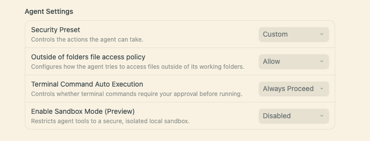

Claude Code／Desktop
Claude 的 project skill 使用 .claude/skills。
<workspace-root>/.claude/skills/tiss-isms-code-update/
SKILL.md必須位於上述資料夾內。- 若本次 session 啟動時還沒有
.claude/skills，新增後重新啟動 Claude。
將 ClickUp ticket 轉成預填的 ISMS-02-14-01 DOCX。Skill 可放在單一 workspace 中供 Claude、Codex 或 Antigravity 使用，不需安裝 ClickUp CLI 或額外 Python 套件。
複製完整 Skill 資料夾 → 放到 agent 的專案目錄 → 填寫 .env → 貼上 ClickUp ticket URL 請 agent 產表。
ISMS表單草稿_YYYYMMDD_taskID.docx
可使用資料夾或 ZIP。不要只複製 SKILL.md，腳本、範本、人名表與隱藏的 .env 都是必要檔案。
請先連線公司 NAS，再從以下路徑取得 Skill 壓縮檔：
/shareall/share/Agent skills/ISMS_系統上線表單預填/tiss-isms-code-update.zip
將 ZIP 複製到自己的 workspace 後解壓縮，應得到 tiss-isms-code-update 同名資料夾。
tiss-isms-code-update/ ├── SKILL.md ├── .env ├── assets/ ├── references/ └── scripts/
<workspace-root> 是你用 agent 開啟的專案資料夾。完成後，重新開啟專案或建立新對話，讓 agent 重新偵測 Skill。
Claude 的 project skill 使用 .claude/skills。
<workspace-root>/.claude/skills/tiss-isms-code-update/
SKILL.md 必須位於上述資料夾內。.claude/skills，新增後重新啟動 Claude。Codex 的 repository-local skill 使用 .agents/skills。
<workspace-root>/.agents/skills/tiss-isms-code-update/
$tiss-isms-code-update；若未出現，重新啟動 Codex。Antigravity 的 workspace skill 同樣使用 .agents/skills。
<workspace-root>/.agents/skills/tiss-isms-code-update/
<workspace-root> 加入 Antigravity Project 的 Folders。.agents/skills/tiss-isms-code-update/，不必在同一 workspace 內放兩份。Claude 則需另外放在 .claude/skills/。
每一份 local skill 都有自己的 .env。開啟該檔案，把範例 token 改成使用者自己的 ClickUp Personal API Token。
CU_API_TOKEN=pk_your_personal_token CU_TEAM_ID=90181438893
CU_TEAM_ID 已填入本公司 ClickUp Workspace ID，一般不需更改。
.env 提交到 Git。這個 Skill 會連續執行讀取 ticket、產生 DOCX、檢查 DOCX 三個 Python 指令。若希望過程不中斷，可讓該 Project 的 terminal commands 自動執行。

Claude、Codex 與 Antigravity 都可使用相同的自然語言指令。Skill 會透過 ClickUp API 取得 ticket 的 title、主要描述、Assignees 與 parent task。
如果 agent 沒有自動選用 Skill，直接寫出 Skill 名稱。
tiss-isms-code-update skill，根據這張 ClickUp ticket 預填 ISMS 表單：https://app.clickup.com/t/90181438893/86eynzkntISMS表單草稿_YYYYMMDD_taskID.docx。例如 ISMS表單草稿_20260907_86eynzknt.docx。